Capítulo 7. Visualização
O capítulo anterior abordou modelagem: como capturamos as decisões de design que compõem a arquitetura de um sistema de software. Na prática, frequentemente existem diferentes maneiras de exibir e interagir com as informações contidas nesses modelos. Este é o domínio da visualização arquitetônica.
Definição. Uma visualização arquitetônica define como os modelos arquitetônicos são representados e como as partes interessadas interagem com essas representações.
Essa é uma definição propositalmente ampla de visualização. Aqui, a visualização consiste em dois aspectos principais: representação e interação. Simplificando, uma representação é uma imagem ou representação visual de decisões de design arquitetônico em um formato específico. Ferramentas de visualização podem fornecer um ou mais mecanismos de interação pelos quais os usuários podem interagir com essas decisões em termos da representação. Esses mecanismos podem incluir comandos de teclado, operações de apontar e clicar, entre outros.
Este capítulo discute a relação entre notações e visualizações de modelagem arquitetônica, e como várias linguagens de modelagem são visualizadas. Em seguida, aborda várias estratégias para projetar e avaliar visualizações para maximizar sua eficácia. O capítulo termina com um panorama de várias técnicas de visualização e avaliações dos pontos fortes e fracos de cada técnica.
Este capítulo não tem a intenção de tratar técnicas de design de usabilidade ou visualização de informações em geral; Esses temas são amplos demais para o escopo deste livro. Em vez disso, o capítulo foca em identificar os tipos de visualizações que podem ser usadas para modelos arquitetônicos e discute questões especificamente relacionadas à visualização de arquiteturas.
Resumo deCapítulo 7
CONCEITOS DE VISUALIZAÇÃO
A visualização desempenha um papel fundamental na arquitetura de software. A mensagem mais importante deste capítulo é que a forma como as arquiteturas são visualizadas pode ser, até certo ponto, separada da forma como são modeladas. Os dois são intimamente relacionados; Na verdade, cada notação de modelagem está associada a uma ou mais visualizações canônicas ou nativas. (Isso será discutido com mais detalhes abaixo.) Fundamentalmente, porém, um modelo é apenas informação organizada. No caso de modelos arquitetônicos, a informação consiste em decisões de design. Visualizações são o meio pelo qual a informação em um modelo ganha forma: como ela é representada e como os usuários interagem com ela.
Um único modelo arquitetônico pode ser visualizado de várias maneiras, e múltiplos modelos diversos podem ser visualizados de maneiras semelhantes. Assim, a visualização pode ser usada para ocultar (ou pelo menos suavizar) diferenças nas notações de modelagem do back-end. Segundo, as visualizações podem variar bastante — muitas são gráficas, mas a maioria das AVDs também possui visualizações textuais. Pesquisas já foram realizadas na área de visualizações esotéricas, como realidades virtuais tridimensionais (Feijs e De Jong 1998).
O objetivo desta seção é distinguir visualizações de suas notações de modelagem subjacentes, apresentar os tipos de visualizações que podem ser usadas para modelar arquiteturas (textuais, gráficas e híbridas) e, em seguida, discutir as questões que surgem quando múltiplas visualizações (de todos esses tipos) são aplicadas simultaneamente a uma arquitetura.
Visualizações Canônicas
É difícil separar a informação abstrata em um modelo das formas concretas pelas quais essa informação é visualizada. Nenhuma informação está completamente desvinculada da visualização. No entanto, mentalmente fazemos essa separação com frequência em nosso dia a dia. Uma placa que mostra um boneco de palito com uma barra atravessando e uma placa próxima dizendo "Não Atravessar" são simplesmente duas formas diferentes de visualizar a mesma informação: uma gráfica e outra textual.
Sob essa perspectiva, as notações de modelagem arquitetônica são simplesmente formas de organizar informações. Cada notação tem pelo menos uma visualização que está diretamente e especificamente associada a ela. Chamamos essa visualização de visualização canônica da notação. Modelos com múltiplas vistas são frequentemente associados a múltiplas visualizações canônicas — uma por visualização; As opiniões serão abordadas na próxima seção.
As ADLs baseadas em texto (incluindo ADLs baseadas em XML) são expressas nativamente usando visualizações baseadas em texto. No entanto, nem todas as notações de modelagem são textuais. Modelos de PowerPoint e OmniGraffle são manipulados inteiramente em visualizações gráficas, e não há uma maneira fácil de extrair uma representação baseada em texto do modelo. Nativamente, diagramas UML são principalmente gráficos. Algumas partes do UML, como as restrições da Linguagem de Restrições de Objetos (OCL) usadas para restringir relações entre elementos do modelo, são textuais, possuindo uma sintaxe e semântica bem definidas próprias.
Uma armadilha comum é que os usuários associem uma notação de modelagem arquitetônica apenas à sua visualização canônica, ou que vejam uma notação e sua visualização canônica como a mesma coisa. Eles não são: a notação é uma forma de organizar informações (abstratas) e a visualização dita como a informação é representada e interagida. Por exemplo, a maioria das ferramentas que lidam com modelos arquitetônicos armazena o modelo em estruturas de dados na memória, associadas a nenhuma visualização específica; Só quando um editor é invocado essa informação é visualizada. Visualizações canônicas apresentam a informação de uma forma intimamente relacionada à sua organização, mas lembre-se de que essa quase sempre não é a única forma de apresentar a informação.
Nem todas as visualizações são ótimas para todos os usos, então notações para as quais existem múltiplas visualizações geralmente são preferíveis àquelas que possuem apenas uma única visualização canônica. Em projetos complexos, objetivos arquitetônicos desejados podem ser mais fáceis de alcançar desenvolvendo uma nova visualização para uma notação existente do que desenvolvendo ou selecionando uma notação totalmente nova.
Visualizações Textuais
Visualizações textuais retratam arquiteturas usando arquivos de texto comuns. Esses arquivos de texto geralmente seguem um formato sintático específico, assim como um arquivo .c ou .java segue a sintaxe da linguagem C ou Java. (Como discutimos, decisões arquitetônicas também podem ser documentadas usando linguagem natural, caso em que a visualização textual só seria limitada pelas regras gramaticais e ortográficas daquela língua.)
A Figura 7-1 mostra duas representações textuais da arquitetura de um cliente Web consistindo em apenas um componente: um navegador Web. A primeira representação retrata uma arquitetura no formato XML nativo do xADL, e a segunda retrata exatamente a mesma arquitetura no xADLite. Este é um exemplo de diferentes visualizações sendo aplicadas ao mesmo modelo. A visualização XML da arquitetura é facilmente lida, manipulada e validada sintaticamente por ferramentas XML. A visualização xADLite descreve a mesma arquitetura (e, de fato, é diretamente derivada do mesmo modelo), mas é melhor otimizada para legibilidade humana.
Visualizações textuais têm várias vantagens. Eles geralmente representam a totalidade de uma arquitetura em uma notação específica em uma única fila. Centenas de editores de texto estão prontamente disponíveis que permitem ao usuário interagir com arquivos de texto. Anos de pesquisa foram dedicados a tecnologias para análise sintica, processamento e edição de texto estruturado. Quando uma sintaxe textual é definida usando uma meta-linguagem como a Backus-Naur Form (BNF), muitas ferramentas estão disponíveis para gerar bibliotecas de programas que possam analisar e verificar a sintaxe de documentos textuais escritos naquela linguagem. Muitos editores de texto oferecem suporte adicional para desenvolvedores em notações específicas, com recursos como autopreenchimento e verificação de sintaxe enquanto você digita.
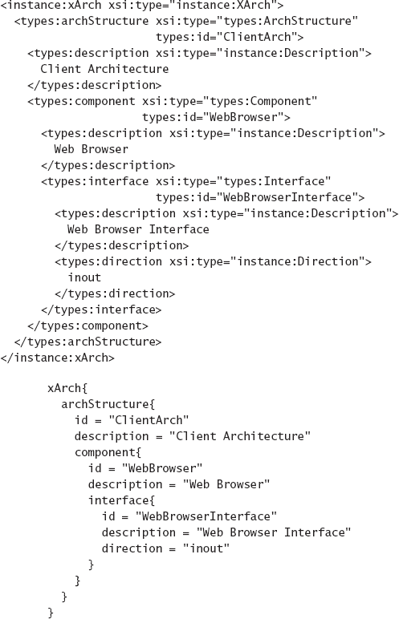
Figura 7-1. Representações textuais para uma arquitetura em xADL e xADLite.
As notações textuais também têm desvantagens. Notações textuais são boas em representar dados de forma linear e hierárquica. (Pense em um programa em uma linguagem como C ou Java: a ordenação linear é feita usando linhas de cima para baixo, e a estrutura hierárquica é capturada usando colchetes e indentação.) No entanto, estruturas em forma de grafo não são facilmente compreendidas (pelas pessoas) por meio de uma visualização textual. Além disso, editores de texto geralmente são limitados a mostrar uma tela contígua cheia de texto, com poucas opções para organizar o texto de forma diferente (embora alguns ambientes avançados possam incluir recursos como dobra de código, que permitem aos usuários recolher um bloco de texto em uma única linha).
Visualizações Gráficas
Visualizações gráficas retratam arquiteturas (principalmente) usando símbolos gráficos em vez de texto. Assim como as visualizações textuais, visualizações gráficas geralmente seguem uma sintaxe (desta vez de símbolos em vez de elementos de texto), mas também podem ser livres (diagramas de alto nível ou visão geral de arquiteturas costumam ser livres e estilísticos).
Figura 7-2mostra duas representações gráficas da arquitetura do módulo lunar. A representação principal é uma visão geral do módulo de pouso e sua missão. Embora essa representação careça de rigor ou formalidade, ela transmite informações úteis aos stakeholders que estão encontrando a aplicação pela primeira vez. Tais representações são frequentemente usadas como visões conceituais de aplicações complexas, especialmente aquelas que consistem em muitos sistemas interconectados. Normas como o Marco de Arquitetura do Departamento de Defesa (DoDAF), discutidas mais extensivamente emCapítulo 16) incluir tais representações — essa representação satisfaria a visão "OV-1" do DoDAF sobre a arquitetura do módulo lunar (Grupo de Trabalho do Framework de Arquitetura do DoD 2004). Note, no entanto, que é ambíguo ou enganoso de várias maneiras importantes. Por exemplo, o módulo de pouso está inclinado um pouco em relação à superfície da lua, o que pode implicar um aspecto bidimensional ou tridimensional do jogo que não existe na aplicação final. Também retrata a Terra ao fundo, o que pode levar a acreditar que as comunicações da Terra desempenham um papel na simulação do módulo de pouso.
A representação inferior é uma visão lógica da arquitetura do Lunar Lender, representando sua estrutura em termos de um gráfico de componentes e conectores. Essa visão é mais rigorosa, menos ambígua e retrata mais informações ao custo de ser menos acessível para partes interessadas externas. A missão e o propósito geral do sistema se perdem nos detalhes dos componentes e suas interconexões.
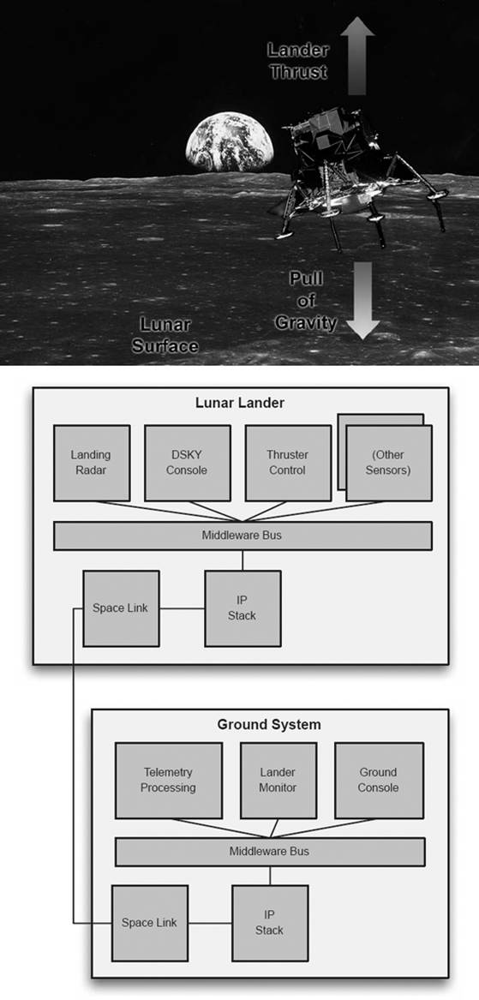
Figura 7-2. Duas visualizações gráficas da mesma arquitetura.
Visualizações gráficas dão aos interessados acesso a informações sobre uma arquitetura de maneiras que visualizações textuais não conseguem. Símbolos, cores e outras decorações visuais geralmente podem ser distinguidos mais facilmente do que elementos de texto estruturado. Relações não hierárquicas entre elementos podem ser vistas muito mais facilmente em um grafo do que em um arquivo de texto. Visualizações gráficas podem usar relações espaciais para expressar relações entre elementos. Visualizações gráficas avançadas também podem empregar animação ou outros efeitos visuais para destacar ou demonstrar diferentes aspectos da arquitetura. As opções para interagir com visualizações gráficas geralmente são superiores às visualizações de texto: rolagem, zoom, aprofundamento, mostrar e esconder diferentes níveis de detalhe, e manipulação direta de objetos com o mouse são comuns em ferramentas de visualização gráfica. Por exemplo, um ambiente gráfico pode permitir que o usuário conecte componentes simplesmente desenhando uma linha entre suas interfaces com o mouse.
Uma grande desvantagem das visualizações gráficas é o custo de construir ferramentas para suportá-las. Existem muitas ferramentas para criar diagramas gráficos — PowerPoint, Visio, OmniGraffle, Photoshop e Illustrator são algumas das mais populares. No entanto, essas ferramentas carecem de compreensão da semântica arquitetônica, e é difícil ou impossível adicionar semântica e operações de interação apropriadas a essas ferramentas para que possam ser integradas a um ambiente mais amplo de engenharia de software. Além disso, essas ferramentas geralmente possuem seus próprios formatos de arquivo (geralmente proprietários) e modelos em memória que são difíceis de conectar a uma representação mais centrada na arquitetura [(Goldman e Balzer 1999) (Ren e Taylor 2003)].
Visualizações Híbridas
Gráfico e textual são maneiras aproximadas de categorizar visualizações. Muitas visualizações borram a linha entre essas categorias. Poucas visualizações gráficas usam apenas símbolos — geralmente, o texto é usado para decorar, rotular ou explicar o significado de vários elementos. Algumas visualizações vão ainda mais longe, expressando certos tipos de decisões de design usando gráficos e outras usando texto. Por exemplo, um diagrama de classes UML é composto principalmente por símbolos interconectados, mas as restrições sobre as relações entre os símbolos são representadas na Linguagem de Restrições de Objetos (OCL) com uma visualização exclusivamente textual.
A Figura 7-3 mostra o UML como uma visualização híbrida. O diagrama de classes é principalmente gráfico, capturando os três elementos principais do módulo lunar — interface do usuário, cálculo e armazenamento de dados. Junto com o diagrama de classes, a OCL textual é empregada para representar a restrição de que a nova taxa de queima deve ser não negativa.
Algumas visualizações podem ser composições de várias visualizações diferentes, tanto gráficas quanto textuais. Por exemplo, o diagrama de estrutura composta UML é uma visualização principalmente gráfica usada para conter outros diagramas UML. Essas visualizações compostas podem ser boas para exibir relações entre diferentes aspectos da mesma arquitetura. Visualizações compostas podem se tornar complexas e confusas rapidamente, à medida que diferentes mecanismos de representação e interação são combinados. Estratégias como mecanismos de interação por detalhamento, onde os usuários podem navegar para subvisualizações a partir de uma visualização composta de nível superior, podem mitigar essa complexidade.
A Relação entre Visualizações e Visões
Algumas visualizações podem representar todo o modelo arquitetônico de uma vez, mas mais frequentemente diferentes visualizações são usadas para representar diferentes visões da arquitetura.Capítulo 6apresentava o conceito de vistas: subconjuntos da arquitetura, geralmente organizados em torno de uma única preocupação ou conjunto de preocupações. Lembre-se das definições apresentadas:
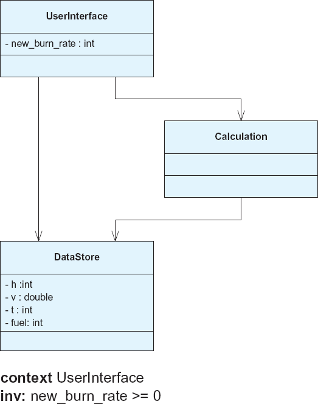
Figura 7-3. UML com restrições como uma visualização híbrida.
Definição. Uma visão é um conjunto de decisões de design relacionadas por uma preocupação comum (ou conjunto de preocupações).
Definição. Um ponto de vista define a perspectiva a partir da qual uma visão é tomada.
Efetivamente, visões e pontos de vista nos permitem considerar diferentes subconjuntos das decisões de design em uma arquitetura. Podemos aplicar o mesmo conceito de subconjunto a visualizações: uma visualização para um ponto de vista define mecanismos de representação e interação apenas para os tipos de decisões de design incluídas nesse ponto de vista. Associamos visualizações a pontos de vista em vez de vistas porque a mesma visualização pode ser usada para visualizar muitas arquiteturas diferentes; Não criamos uma nova visualização para cada arquitetura. Por exemplo, o diagrama de classes UML é uma visualização que pode ser usada para visualizar a estrutura de classes de várias aplicações diferentes. Dois diagramas de classes diferentes não são duas visualizações separadas; eles são simplesmente duas instâncias da visualização do diagrama de classes UML.
Quando uma notação está associada a um conjunto de pontos de vista, geralmente acontece que cada ponto de vista tenha sua própria visualização canônica. UML é um bom exemplo disso: cada tipo de diagrama UML pode ser visto como uma visualização separada. Embora as visualizações canônicas do UML sejam todas gráficas, elas diferem amplamente. O diagrama em formato de caixa e seta usado para representar componentes e suas relações tem pouca semelhança com o diagrama de estados tipo autômato ou diagramas de sequência semelhantes a linhas do tempo, como visto na Figura 7-4. Isso é uma consequência natural do fato de que os modelos arquitetônicos capturam uma grande variedade de informações sobre um sistema. O que constitui uma visualização útil para uma preocupação pode ser inútil para outra. Assim como os stakeholders do sistema devem identificar os pontos de vista que usarão para examinar e trabalhar com uma arquitetura, também devem identificar visualizações apropriadas para cada ponto de vista.
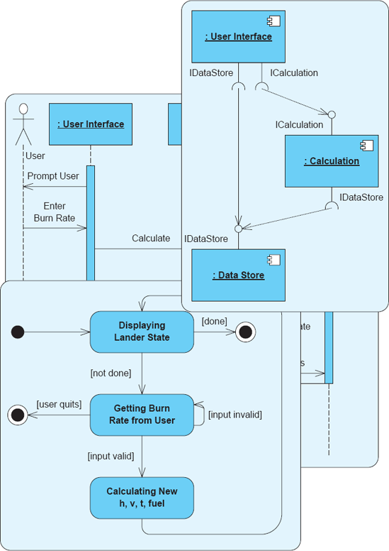
Figura 7-4. Vários tipos de diagramas UML.
Todos os nossos comentários anteriores sobre a relação entre visualizações e modelos se aplicam igualmente a modelos parciais — ou seja, visualizações. Se o mesmo conjunto de decisões de design arquitetônico for simplesmente representado de duas maneiras diferentes, essas não são duas visões diferentes da arquitetura, mas sim duas visualizações diferentes aplicadas à mesma visão.
EmCapítulo 6, mostramos uma representação do Lunar Lander em xADLite, seguida pela representação equivalente em Archipelago.Figura 7-5repete as duas representações deCapítulo 6(embora a extensa visualização xADLite tenha sido abreviada). Este é um exemplo de duas visualizações diferentes para o ponto de vista estrutural sendo aplicadas ao mesmo subconjunto de decisões de projeto (isto é, visão) da arquitetura do Lunar Lender. Assim, não diríamos que essas são a visão xADLite e a visão do Arquipélago da arquitetura do Lunar Lender; estes são o xADLite e o ArquipélagoRepresentaçõesdoVisão estruturaldo sistema Lunar Lander.
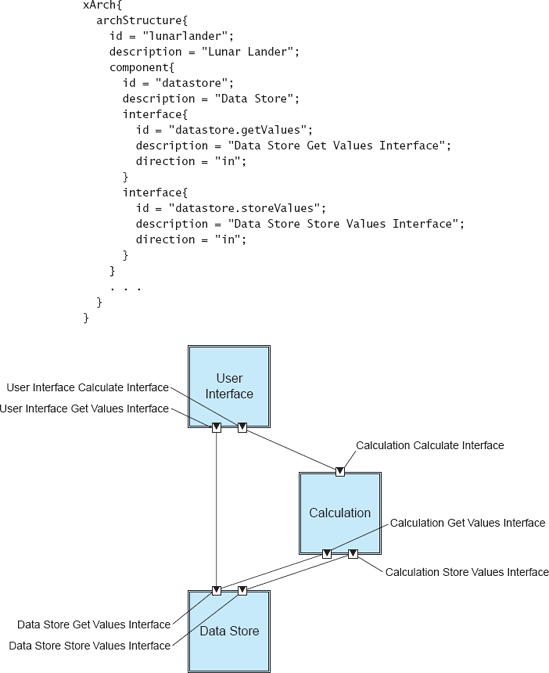
Figura 7-5. Lunar Lander em duas visualizações diferentes: uma visualização textual xADLite (abreviada para space) e uma visualização Archipelago.
AVALIANDO VISUALIZAÇÕES
As seções acima descreveram o que são visualizações, que tipos de visualizações existem e as relações entre visualizações, modelos, vistas e pontos de vista. No entanto, uma questão chave surge agora: O que torna uma visualização "boa"? Como distinguir visualizações umas das outras e escolher a melhor? Em última análise, o valor de uma visualização depende de quão bem ela se encaixa nas necessidades dos stakeholders do projeto. Como vimos, as necessidades e prioridades dos stakeholders variam de projeto para projeto, então uma visualização perfeita para um projeto pode ser inútil em outro. No entanto, é possível identificar algumas qualidades desejáveis para visualizações, que podem ser priorizadas pelos stakeholders para se adequar às suas situações específicas. Essas qualidades incluem:
Fidelidade
Fidelidade é uma medida de quão fielmente uma visualização representa o modelo subjacente. Em geral, a fidelidade mínima aceitável para uma visualização exige que as informações apresentadas na visualização sejam consistentes com o modelo subjacente. Seria extremamente confuso, por exemplo, se uma visualização estrutural mostrasse componentes que na verdade não estavam na arquitetura, e assim por diante. No entanto, as visualizações não precisam abordar todas as informações em um modelo subjacente. Deixar alguns detalhes de fora pode muitas vezes tornar as visualizações mais eficazes ao focar a atenção nas partes do modelo que importam em uma determinada situação. Esse é o caso de visualizações associadas a pontos de vista específicos, por exemplo.
A fidelidade afeta tanto a representação quanto a interação. Um mecanismo de interação é fiel se respeita a sintaxe e a semântica subjacentes da notação visualizada. Por exemplo, uma interface que permite que as partes interessadas alterem o modelo de maneiras inválidas pode ser confusa. É preciso encontrar um equilíbrio entre fidelidade e usabilidade; Impedir que os usuários cometam erros limita totalmente o design exploratório.
Consistência
Consistência é uma medida de quão bem uma visualização usa representações e mecanismos de interação semelhantes para conceitos semelhantes. Esse sentido é de consistência interna (se uma visualização é consistente consigo mesma) em vez de consistência com o modelo subjacente (que chamamos de fidelidade). Em termos de representação, visualizações consistentes exibem conceitos semelhantes de maneiras semelhantes. Por exemplo, em UML, um objeto é sempre representado como um retângulo com um nome sublinhado, independentemente do contexto em que aparece. No entanto, UML não é visualmente perfeitamente consistente: na maioria dos diagramas, uma seta pontilhada com cabeça aberta representa uma dependência, mas em um diagrama de sequência, ela representa uma invocação ou mensagem assíncrona. Em termos de interação, visualizações consistentes permitem que o usuário faça coisas semelhantes de maneiras parecidas. Se clicar duas vezes em um elemento permite que o usuário atribua um nome a esse elemento, exigir que o usuário clique com o botão direito e selecione uma opção de menu para atribuir um nome a outro tipo de elemento seria inconsistente.
Em geral, visualizações mais consistentes são preferíveis a visualizações menos consistentes. A exceção ocorre novamente nos extremos: ser consistente demais pode fazer com que uma visualização tenha uma variedade enorme e confusa de símbolos (para garantir que nenhum conceito compartilhe um símbolo) ou limitar a concisão de uma visualização.
Inteligibilidade
A compreensibilidade é uma medida de quão fácil é para as partes interessadas entenderem e usarem uma visualização. Isso faz com que a compreensibilidade seja uma função tanto da visualização quanto dos stakeholders que a utilizam. Muitos fatores contribuem para a compreensibilidade, incluindo a complexidade da visualização e de como as informações são apresentadas, a complexidade da interface de interação e as habilidades e experiências prévias das partes interessadas.
Uma forma de melhorar a compreensibilidade é restringir o escopo de uma visualização, limitando o número de conceitos que ela tenta apresentar e otimizando a visualização apenas para esses conceitos. Tentar exibir informação demais de uma vez — ou muitos conceitos não relacionados simultaneamente — complica uma visualização e aumenta sua complexidade. Alternativamente, a compreensibilidade de uma visualização pode ser aprimorada aproveitando o conhecimento das partes interessadas. Por exemplo, usar um símbolo de componente UML para representar componentes em diagramas não UML pode tornar uma visualização mais compreensível para partes interessadas que já têm experiência com UML. (Claro, isso pode sair pela culatra se as partes interessadas trouxerem suposições sobre componentes UML que não estão sendo implícitas pelo uso do símbolo.)
Dinamismo
Dinamismo é uma medida de quão bem uma visualização suporta modelos que mudam ao longo do tempo; emCapítulo 6estes são chamados deModelos dinâmicos. Informações sobre mudanças fluem de duas formas: mudanças no modelo (de qualquer fonte) podem ser refletidas na visualização, e mudanças na visualização (por meio de um dos mecanismos de interação) podem ser refletidas no modelo.
Existe uma série de possibilidades aqui. Uma visualização dinâmica ideal será atualizada imediatamente quando o modelo subjacente mudar de qualquer fonte. Além disso, mudanças na visualização por meio dos mecanismos de interação devem fazer com que o modelo seja atualizado de acordo.
Em geral, a representação de um modelo dinâmico envolve algum tipo de animação assíncrona; caso contrário, a visualização se tornará inconsistente conforme o modelo muda. Uma alternativa menos desejável é permitir que o usuário atualize manualmente a visualização, opcionalmente notificando o usuário quando o modelo subjacente mudou para que ele possa realizar uma operação de atualização. Com relação à interação, qualquer visualização que permita edição deve ser, até certo ponto, dinâmica. Visualizações que atualizam o modelo subjacente em tempo real, conforme o usuário trabalha, geralmente são preferíveis àquelas que sincronizam as mudanças apenas periodicamente ou a pedido do usuário, por exemplo, por uma operação de salvamento.
Coordenação de Visualizações
A coordenação de visualização é o quão bem uma visualização é (ou pode ser) coordenada com outras. Em geral, ambientes que permitem a apresentação e uso simultâneo de múltiplas visualizações oferecem aos usuários mais insights e capacidades ao projetar ou revisar uma arquitetura. No entanto, coordenar múltiplas visualizações nem sempre é simples ou simples. Estratégias para coordenar visualizações são discutidas em sua própria seção abaixo.
Estética
Estética é uma medida de quão agradável uma visualização é para seus usuários. A estética não se limita à representação; As interfaces do usuário também têm qualidades estéticas. Aqui, representação é o olhar e a interação é a sensação da visualização. Comparadas a outras qualidades, as qualidades estéticas são extremamente subjetivas. No entanto, existe uma enorme quantidade de literatura disponível sobre avaliação e design de exibições esteticamente agradáveis de informações. Isso vem tanto da comunidade de ciência da computação (por exemplo, design de interface do usuário) quanto de outras comunidades (arte, publicidade, marketing, entre outras). Por exemplo, a teoria das cores é instrutiva na escolha de cores atraentes e complementares para visualizações gráficas. Determinar quais cores são complementares é fácil com uma roda cromática e algum conhecimento básico de como os esquemas de cores são construídos, mas difícil apenas com intuição.
Tecnólogos tendem a ignorar ou desvalorizar aspectos estéticos das visualizações porque geralmente agregam pouco valor funcional. No entanto, qualidades estéticas podem frequentemente fazer a diferença entre uma visualização ser aceita ou rejeitada por potenciais usuários.
Extensibilidade
Extensibilidade é uma medida de quão fácil é modificar uma visualização para assumir novas capacidades, seja para representação ou interação. Assim como modelos e notações subjacentes são frequentemente estendidos para apoiar objetivos específicos de domínio e projeto, as visualizações desses modelos também precisam ser estendidas. Uma visualização difícil ou impossível de estender se tornará cada vez menos útil à medida que os modelos subjacentes se expandem para assumir novos conceitos.
Mecanismos para suportar visualizações extensíveis incluem APIs de plug-in, suporte a scripts e até mesmo simplesmente abrir o código que implementa a visualização para que outros possam modificá-lo.
Construindo uma Visualização
A essa altura, já deveria estar claro que os tipos de conceitos que podem ser capturados em uma arquitetura são diversos e complexos. Eles vão desde componentes estruturais e conectores até suas interfaces e os cronogramas de acordo com os quais serão desenvolvidos. As partes interessadas que optarem por incluir esses elementos em suas arquiteturas também terão que escolher como serão representados e manipulados em várias visualizações.
Se uma notação pré-existente ou pronta para usar for usada para capturar a arquitetura, suas visualizações canônicas estarão disponíveis. Por exemplo, UML captura a noção de uma classe e tem um símbolo específico usado para representar essa classe.
Quando decisões são capturadas que não possuem uma visualização canônica, ou que a visualização canônica é insuficiente ou inadequada, as partes interessadas têm a opção de construir novas visualizações. Criar boas visualizações é uma espécie de arte, mas há algumas coisas que podem ajudar.
Empreste elementos de visualizações semelhantes. Mesmo que você escolha não usar UML para capturar sua arquitetura, pode ser valioso pegar emprestados certos símbolos ou convenções do UML, como o formato de um símbolo de pacote para representar um dos seus pacotes ou a seta fechada em forma de ponta branca para representar uma relação de generalização. Isso tem a vantagem de que muitos usuários já estarão familiarizados com a representação e seu significado. No entanto, também existem desvantagens: os usuários podem supor que seus diagramas são UML (quando não são) ou podem assumir semânticas específicas que você não pretendia importar ao usar o símbolo. Uma boa visualização vai encontrar um equilíbrio. Uma boa fonte para símbolos genéricos que não carregam implicações semânticas extensas é o fluxograma. Embora os fluxogramas tenham caído cada vez mais em desuso à medida que os programas se tornaram mais complexos, eles ainda são bem compreendidos por uma grande variedade de usuários. Símbolos comuns de fluxograma úteis fora do contexto incluem o losango (ponto de decisão), o tambor vertical (armazenamento em disco), o tambor lateral (armazenamento em memória), e assim por diante.
Seja consistente entre as visualizações. Se você está representando o mesmo conceito em muitas visualizações, use simbologia semelhante. Da mesma forma, tente evitar usar a mesma simbologia para representar conceitos diferentes em visualizações diferentes.
Dê significado a cada aspecto visual dos elementos. Em um diagrama que representa muitos componentes, é tentador atribuir cores diferentes aos componentes para que o diagrama não fique muito monocromático. Embora isso possa ser esteticamente agradável, é confuso do ponto de vista semântico, já que o aspecto visual da cor não tem relação com o modelo arquitetônico subjacente. É uma boa ideia usar decorações visuais, mas cada decoração deve ter um significado preciso.
Em uma nota relacionada, os usuários tendem a (muitas vezes subconscientemente) incorporar informações semânticas reais em decorações visuais sem tornar essas informações explícitas no modelo arquitetônico. Por exemplo, em uma representação de gráfico de caixa e seta, um usuário pode colocar componentes próximos uns dos outros para indicar que compartilham funcionalidades ou organizar os componentes de forma em camadas para refletir um entendimento implícito de que existem dependências em camadas na arquitetura. Quando isso ocorre (e os relacionamentos não são formalmente documentados), informações valiosas ficam incorporadas e perdidas na visualização. Aqui, os interessados devem considerar se essas relações visuais têm importância semântica e, se sim, encontrar uma forma de incluí-las explicitamente nos modelos do sistema.
Documente o Significado das Visualizações. Embora todos gostemos de pensar que nossos diagramas e outras visualizações são autoexplicativos, geralmente isso não é verdade. Documentar o significado de cada aspecto do diagrama, usando uma legenda, documento de design ou padrão organizacional, é fundamental para reduzir a confusão entre as partes interessadas. No máximo, cada aspecto da visualização deve corresponder a uma informação no modelo.
Equilibre interfaces tradicionais e inovadoras. É justo supor que a maioria dos envolvidos no design de software terá usado uma quantidade significativa de software. Como já apontamos, pegar emprestado técnicas conhecidas de representação e interação permite que os usuários aproveitem suas experiências anteriores. No entanto, seguir muito rigorosamente essa diretriz resultará em um design de visualização estagnado. De vez em quando, considere também emprestar recursos úteis de visualização inovadores e não tradicionais, ou até mesmo desenvolver seus próprios.
Por exemplo, a maioria dos usuários assume que uma visualização de gráfico de caixa e seta para a estrutura de uma arquitetura vai se parecer e funcionar como a do PowerPoint ou do Visio. No entanto, quase certamente não é verdade que PowerPoint e Visio tenham aperfeiçoado a edição de gráficos em caixas e setas. Aqui, pode-se considerar paradigmas avançados de layout, como layouts olho de peixe, onde a informação é exibida em tamanhos grandes no centro da tela e em tamanhos menores nas bordas, ou paradigmas de detalhamento, onde o zoom é usado como metáfora visual para observar informações mais detalhadas. Uma boa fonte de inspiração no design de visualização são outros pacotes de software que estão fora do campo do design, como aplicações CAD, videogames e assim por diante. Aspirantes a designers de visualização devem observar interfaces de usuário incomuns, porém úteis, que encontrarem e determinar como aplicar essas ideias de design à visualização arquitetônica.
Aplicando as Lições de Edward Tufte à Visualização de Arquitetura de Software
Edward Tufte, professor emérito de estatística, design da informação, design de interfaces e economia política na Universidade de Yale, é mais conhecido por uma série de livros influentes, incluindo The Visual Display of Quantitative Information (Tufte 2001) e Envisioning Information (Tufte 1990), que oferecem conselhos práticos sobre como visualizar conjuntos de dados complexos para maximizar impacto e eficácia. Embora o trabalho de Tufte se concentre principalmente em representações estáticas de dados estatísticos e quantitativos, muitas de suas lições também podem ser úteis no design e avaliação de visualizações de arquitetura de software.
A abordagem de Tufte pode ser resumida como uma de parcimônia. Um conceito central no trabalho de Tufte é maximizar a relação dados-tinta — projetar representações que focam em representar os dados alvo e a interpretação ajuda com o mínimo possível de distrações, decorações ou enfeites. Ele cunhou o termo "chartjunk" para se referir a elementos que prejudicam a exibição dos dados. O lixo gráfico pode ser óbvio — o uso de cores sem sentido, sombras, preenchimentos fotográficos ou texturizados, e assim por diante. Chartjunk também pode ser sutil—linhas de grade excessivamente ousadas em um fundo, bordas grossas ao redor dos elementos de dados que diminuem a importância percebida dos dados, e assim por diante. Para Tufte, representações gráficas nem sempre são ideais: organizações textuais simples de dados (principalmente tabelas) podem frequentemente transmitir a mesma informação com muito menos "tinta" e muito menos distrações.
No entanto, a defesa da parcimônia por Tufte não necessariamente equivale ao minimalismo. Muitos dos exemplos de Tufte, especialmente quando conjuntos de dados complexos são usados, são extraordinariamente densos e exibem múltiplas propriedades dos dados simultaneamente. No entanto, essas representações ainda focam fortemente nos próprios dados. Imaginando Informação, em particular, aborda questões relacionadas à exibição desses conjuntos de dados.
Em Envisioning Information, Tufte geralmente defende aumentar a dimensionalidade das representações como forma de lidar com dados complexos. Tufte começa lamentando as limitações da "flatland" — o espaço bidimensional proporcionado por pedaços de papel e telas de computador. Ele apresenta várias estratégias diferentes para sair da planície, principalmente integrando dimensões espaciais ou temporais adicionais nas representações. Em um meio bidimensional, a perspectiva pode ser usada para criar imagens espaciais tridimensionais. Na época da publicação do livro em 1990, as tecnologias de renderização tridimensional ainda eram um tanto inacessíveis, e muitos exemplos no livro mostram representações tridimensionais desenhadas à mão por artistas, embora alguns exemplos simples gerados por computador também apareçam. Outra forma de adicionar dimensões espaciais ao flatland é por meio de camadas: dividir os dados em múltiplas representações que são combinadas ou sobrepostas umas às outras. Dimensões temporais também podem ser levadas em conta mostrando os mesmos dados várias vezes em diferentes estados, representando diferentes instantâneos no tempo. Dimensões espaciais e temporais podem ser adicionadas por meio de um conceito que Tufte chama de "pequenos múltiplos" — mostrando muitas pequenas representações simples de dados relacionados (ou dos mesmos dados em momentos diferentes) lado a lado em sucessão, facilitando para os leitores compararem rapidamente.
Essas técnicas (representações tridimensionais, camadas, variação temporal e pequenos múltiplos) podem ser aplicadas na construção de visualizações de arquitetura de software, embora certamente poucas visualizações as aproveitem hoje em dia. Isso também representa uma área de pesquisa em andamento; por exemplo, o projeto EASEL (Hendrickson e van der Hoek 2007) está focado em trazer conceitos interativos de camadas para um ambiente de desenvolvimento de arquitetura baseado em xADL.
O trabalho de Tufte foca principalmente em representações estáticas da informação, mas um novo conjunto de possibilidades se abre quando a interatividade de um computador é colocada em ação. Computadores, especialmente PCs modernos com processadores rápidos, telas coloridas de alta resolução e hardware gráfico especializado, podem ser usados para criar visualizações interativas que proporcionam uma fuga ainda mais imersiva do terreno plano. Embora ainda confinada a uma tela fundamentalmente bidimensional, a tecnologia de renderização tridimensional agora está disponível para todos, e as representações tridimensionais não precisam mais permanecer fixas em uma página. Um usuário pode facilmente pegar um modelo tridimensional e girá-lo, examiná-lo e manipulá-lo no espaço virtual de qualquer ângulo usando um computador. Visões tridimensionais das arquiteturas de software ainda não tiveram impacto no mainstream. Isso pode ser porque elas não são maduras o suficiente, ou simplesmente não são úteis para representar o tipo de dados que compõem um modelo arquitetônico. Projetos como o EASEL, citado acima, não apenas decompõem arquiteturas em camadas, mas permitem interação ao vivo com essas camadas, ligando-as e desligando-as, usando-as para expressar alternativas, e assim por diante. A animação tem sido usada de maneiras limitadas para fornecer uma dimensão temporal às visualizações arquitetônicas (geralmente visualizações de efeitos que resultam de algum tipo de simulação), mas muito mais trabalho ainda precisa ser feito aqui também.
Tufte e os designers de visualizações arquitetônicas têm muito a aprender uns com os outros. O trabalho de Tufte oferece insights valiosos sobre como representar informações muito mais complexas do que o modelo arquitetônico médio em um meio muito limitado (papel bidimensional estático). Mesmo com essas restrições — e talvez por causa delas — ele defende explorar dimensões que ainda não são bem utilizadas pelas visualizações arquitetônicas modernas. Por outro lado, visualizações arquitetônicas, especialmente aquelas implementadas em um editor ou outra ferramenta, podem explorar os recursos de computadores rápidos com telas de alta resolução para criar visualizações muito mais dinâmicas do que seria possível no papel. Aqueles que desejam projetar novas visualizações (ou avaliar as já existentes) fariam bem em absorver as lições de Tufte e contextualizá-las em termos de um meio interativo baseado em computador.
Coordenação de Visualizações
Quando múltiplas visualizações da mesma informação estão disponíveis, é fundamental coordenar essas visualizações entre si, para que as mudanças na informação por meio de uma visualização sejam refletidas com precisão em outras visualizações. Se as visualizações não forem coordenadas, podem ficar fora de sincronia e causar confusão.
É importante distinguir a coordenação de múltiplas visualizações da manutenção da consistência arquitetônica. Aqui, estamos apenas lidando com garantir que múltiplas visualizações do mesmo (partes do) modelo arquitetônico estejam atualizadas em relação ao modelo. Inconsistências e conflitos entre decisões de projeto armazenadas no modelo são uma questão separada.
As partes interessadas devem decidir como e quanto permitir que múltiplas visualizações exibam as mesmas informações arquitetônicas ao mesmo tempo. Se os usuários só puderem visualizar informações por uma visualização por vez, as visualizações podem ser sincronizadas com o modelo arquitetônico quando forem ativadas. Eles também podem assumir que o modelo não mudará devido a alguma influência externa enquanto estiverem ativos — quaisquer mudanças no modelo serão feitas por meio dessa única visualização.
No entanto, se a mesma informação puder ser visualizada de várias formas simultaneamente, geralmente é uma boa ideia sincronizar as visualizações em tempo real para que representem com precisão o modelo subjacente. Essa situação é muito mais complicada, pois qualquer visualização pode alterar o modelo, e as outras visualizações devem responder adequadamente a essa mudança. Se as visualizações incluírem tanto representação quanto interação, então tanto a representação quanto o estado de interação das visualizações devem ser atualizados. Isso pode significar mudar de modos de edição, atualizar opções de menu, e assim por diante.
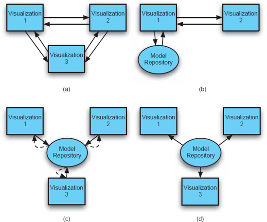
Figura 7-6. Múltiplas estratégias para coordenar visualizações da mesma informação: (a) peer-to-peer, (b) mestre-escravo, (c) pull e (d) push.
Coordenar múltiplas visualizações pode ser realizado por meio de muitos métodos conhecidos, dependendo da situação. Para situações em que a informação pode ser visualizada por meio de apenas uma visualização por vez, um método simples de importação-exportação geralmente funciona melhor: as representações iniciais são criadas quando a visualização é chamada e armazenadas (se necessário) quando a visualização é descartada.
Situações em que múltiplas visualizações simultâneas são permitidas são mais difíceis de lidar. Nesses casos, quatro estratégias gerais de sincronização estão disponíveis (veja as Figuras 7-6):
Peer-to-Peer. As visualizações mantêm suas próprias cópias das informações do modelo, conhecem umas às outras e notificam explicitamente umas às outras sobre mudanças. Essas estratégias podem ser frágeis porque tendem a acoplar visualizações de forma muito próxima. Eles exigem muitas dependências ponto a ponto. O número de dependências é
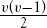
Mestre-Escravo. Uma visualização é principalmente responsável por interagir com o repositório do modelo, e serve como a visualização "mestre". Outras visualizações de escravos coordenam através desse mestre, seja por meio de uma estratégia baseada em empurrar ou puxar (veja abaixo). Isso funciona bem quando uma visualização é auxiliar a outra; Por exemplo, imagine um editor gráfico onde a janela principal mostra uma versão ampliada de uma parte da arquitetura, mas o canto da janela é segmentado para mostrar uma miniatura de toda a arquitetura ao mesmo tempo (para fornecer contexto ao usuário ou servir como auxílio à navegação).
Baseado em Pull-Base Cada visualização consulta repetidamente um modelo compartilhado para obter alterações e se atualiza conforme necessário. Isso pode acontecer manualmente — a pedido do usuário, automaticamente em intervalos periódicos ou em resposta a certas ações (por exemplo, quando o usuário clica em uma nova visualização ou tenta fazer uma alteração em outra visualização). Uma desvantagem das estratégias baseadas em pull é que elas podem exibir informações desatualizadas até realizarem uma operação de pull. Estratégias baseadas em pull podem ser usadas quando o repositório do modelo é totalmente passivo (por exemplo, uma estrutura de dados que não envia eventos quando muda, ou um sistema de banco de dados sem gatilhos). Quando as atualizações de visualização são computacionalmente caras, estratégias baseadas em pull-s podem ser usadas para limitar a frequência com que as visualizações são atualizadas. Além disso, se apenas uma visualização estiver realmente visível por vez, pode não valer a pena atualizar uma visualização até que o usuário a chame.
Visualizações Baseadas em Push são notificadas e, consequentemente, se atualizam sempre que o modelo muda. As notificações geralmente são multicast para visualizações por meio de eventos assíncronos. Essa é a estratégia empregada pelo padrão modelo-visualização-controlador. Estratégias baseadas em empurrar mantêm todas as visualizações atualizadas. Essas estratégias funcionam bem quando múltiplas visualizações são apresentadas ao usuário simultaneamente.
Em situações em que a arquitetura está organizada em múltiplos modelos (parciais), às vezes é possível coordenar o acesso a esses modelos por meio de uma única visualização, mascarando assim algumas das diferenças entre notações ou combinando a força de múltiplas visualizações. As figuras 7-7 mostram uma arquitetura cuja estrutura de componente e conector é expressa em xADL 2.0, mas o projeto detalhado de cada componente é expresso em UML.
Além do Design: Usando a Visualização Dinamicamente
Como discutido acima, visualizações arquitetônicas são usadas principalmente para representar e permitir a interação com as decisões de design que compõem uma arquitetura. No entanto, visualizações mais avançadas e dinâmicas podem ser usadas para obter um entendimento ainda mais profundo da arquitetura.
Agora introduzimos o conceito de visualizações de efeitos.
Definição. Uma visualização de efeitos é uma visualização que não representa diretamente decisões de design arquitetônico, mas sim os efeitos das decisões de design arquitetônico.
Por exemplo, imagine um modelo arquitetônico que contém informações suficientes para ser usado como base para uma simulação comportamental. A saída ou os resultados dessa simulação não são estritamente um modelo arquitetônico, pois são os resultados das decisões de projeto tomadas na arquitetura, e não das decisões em si. Assim, visualizações desses resultados não são estritamente visualizações arquitetônicas. Esses resultados, no entanto, podem ser extremamente eficazes para ajudar as partes interessadas a compreender, implementar ou depurar melhor a arquitetura. Portanto, é útil considerar essas visualizações de efeitos em conjunto com visualizações de arquitetura mais tradicionais.
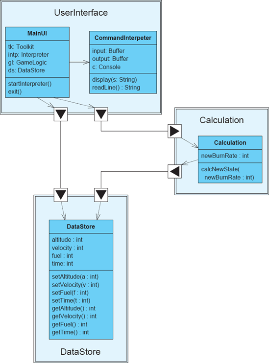
Figura 7-7. Visualização que combina elementos de xADL e UML.
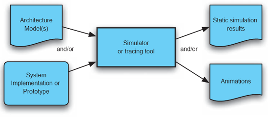
Figuras 7-8. Gerando visualizações de efeitos.
As figuras 7-8 mostram estratégias comuns para gerar visualizações de efeitos. Em geral, um modelo arquitetônico rico serve como uma entrada, e uma versão implementada do sistema ou um protótipo pode servir como outra. Esses recursos são inseridos em uma ferramenta que pode analisar ou simular o comportamento do sistema, ou talvez registrar e rastrear o funcionamento da implementação ou protótipo do sistema. A saída dessa ferramenta pode incluir resultados de simulação estática ou animações que demonstram o funcionamento do sistema (simulado).
Diversas ferramentas de arquitetura fornecem visualizações de efeitos, incluindo o Rapide, o Analyzer de Estado de Transição Rotulado (LTSA) e a Ferramenta de Rastreamento e Análise de Mensagens (MTAT). Essas ferramentas são discutidas com mais detalhes na Seção 7.5.
QUESTÕES COMUNS NA VISUALIZAÇÃO
Embora este capítulo tenha se concentrado principalmente em técnicas para construir uma ampla variedade de visualizações eficazes, também podemos aprender com erros comuns que as pessoas cometem ao projetar visualizações. As seções a seguir apresentam alguns desses erros.
Mesmo símbolo, significado diferente
Quando o mesmo símbolo é usado várias vezes na mesma visualização, ou mesmo em visualizações relacionadas, torna-se confuso para os usuários se significados diferentes forem aplicados ao símbolo. Isso é extremamente comum para símbolos genéricos, como formas básicas (retângulos, ovais, setas com cabeças padrão). Visualizações gráficas oferecem aos usuários uma grande variedade de formas de criar símbolos distintos — formas, decorações, ícones, bordas, pontas de seta, preenchimentos e assim por diante. Todos esses podem ser usados para tornar as visualizações mais ricas e precisas.
As figuras 7-9 mostram um diagrama simples, mas enganoso, de um sistema cliente-servidor. Aqui, tanto os clientes quanto o servidor são representados pelo mesmo símbolo (um retângulo), mesmo sendo distintos. Os clientes e o servidor estão todos conectados pelo mesmo tipo de linha simples, embora as etiquetas indiquem claramente que são tipos diferentes de conexões. Além disso, dadas as funções dos clientes indicadas por essas conexões — dados, controle, monitoramento — é possível que os clientes nem sequer sejam parecidos entre si, mesmo que pareçam ser.
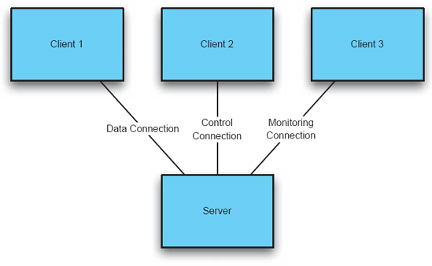
Figura 7-9. Exemplo do mesmo símbolo, significado diferente.
Diferenças sem Significado
Visualizações gráficas em que elementos semelhantes são repetidos repetidamente (como os mesmos tipos de componentes ou os mesmos tipos de links) podem frequentemente parecer desinteressantes ou esteticamente planas. É comum tentar apimentar esses diagramas adicionando decorações e outras mudanças nos símbolos, principalmente por seu valor estético.
As figuras 7-10 mostram um exemplo dessa situação. Aqui, os clientes de PC, que normalmente são uniformes, são representados com um símbolo diferente. Diferentes estilos de conexão (incluindo uma variedade aleatória de estilos de linha e pontas de seta) conectam esses clientes uniformes ao servidor, todos para o mesmo propósito. Embora esse diagrama realmente pareça mais interessante do que o das Figuras 7-9, ele só serve para confundir. Isso implica que há heterogeneidade entre os clientes e que as conexões entre eles e o servidor são substancialmente diferentes.
Condecorações sem significado
Diferenças sem significado não são o único problema que algumas visualizações gráficas enfrentam. Um erro relacionado é a inclusão consistente de decorações visuais que indicam significado, mas não têm a intenção de transmiti-lo. Um exemplo clássico disso é o uso de setas duplas para indicar uma conexão simples entre dois símbolos. As pontas das setas implicam direcionalidade: que a informação ou controle está fluindo em ambas as direções através da conexão. Frequentemente, o significado pretendido é simplesmente uma associação; nesse caso, as pontas de flecha só servem para confundir a questão ao indicar fluxos onde não há.
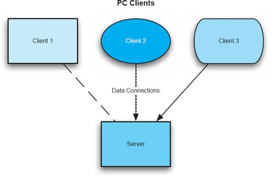
Figuras 7-10. Exemplo de "diferenças sem significado."
As figuras 7-11 mostram um diagrama entidade-relação (ER) aparentemente inocente. Esses diagramas são usados para indicar vários elementos de um sistema e suas relações de quantidade entre si. Por exemplo, há um elemento de lógica de negócios no sistema, associado a um servidor comum e muitos servidores de backup. No entanto, as conexões no diagrama são todas setas de duas pontas. Tradicionalmente, diagramas RE não incluem associações direcionais, pois não têm a intenção de implicar dependência, fluxo de dados ou qualquer outro significado comumente associado a setas. Essas decorações adicionais podem indicar coisas sobre as relações entre esses elementos que simplesmente não são verdadeiras.
Símbolo Emprestado, Significado Diferente
Visualizações nunca são realmente interpretadas de novo; elas são sempre vistas através da lente da experiência e conhecimento prévios do usuário. Usuários experientes estão familiarizados com um catálogo de outras visualizações e com os símbolos e significados associados a essas visualizações. Usar símbolos fortemente associados a uma visualização diferente é uma boa ideia se o significado (aproximado) do símbolo também for trazido. Usar o mesmo símbolo para significar algo completamente diferente é uma receita para o desastre. Por exemplo, usar a seta fechada em forma de ponta branca em um diagrama para significar "chamadas" provavelmente confundirá usuários de UML, que interpretarão essa seta como significando "generalização".
As figuras 7-12 mostram um layout lógico simples para uma aplicação. Em relação às questões acima, ela se sai bem: três tipos diferentes de símbolos são usados para três tipos diferentes de componentes, apenas um tipo de seta é usado e indica uma dependência de chamada, e assim por diante. O problema desse diagrama está na escolha dos símbolos. Todos esses símbolos são usados em diagramas clássicos de fluxograma. O cilindro vertical, usado neste diagrama para representar o componente de lógica de negócios, é geralmente usado em gerações de fluxo para indicar um armazenamento de dados ou disco. A caixa com fundo ondulado, usada aqui para representar o componente de armazenamento de dados, geralmente é usada para representar um documento ou arquivo de dados. Usuários familiarizados com essas interpretações podem inferir incorretamente que o armazenamento de dados não era um componente, mas simplesmente um arquivo, e que a lógica de negócio também atuava como algum tipo de armazenamento de dados.
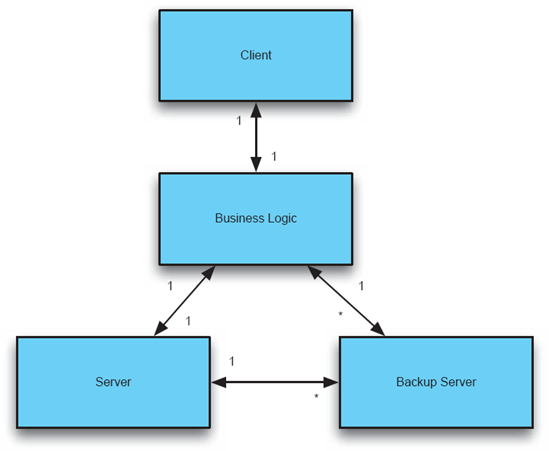
Figuras 7-11. Exemplo de decorações sem significado.
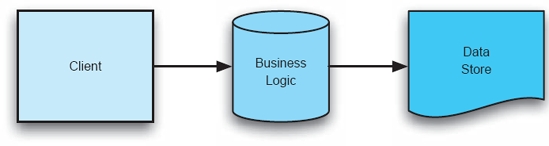
Figura 7-12. Exemplo de símbolo emprestado, significado diferente.
AVALIAÇÃO DE TÉCNICAS DE VISUALIZAÇÃO
Nas seções anteriores, exploramos várias dimensões que podem ser usadas para caracterizar diferentes técnicas de visualização. Essas dimensões podem ser facilmente transformadas em uma rubrica para análise crítica e avaliação de diferentes visualizações. Essa rubrica será aplicada a várias técnicas no restante deste capítulo.
Rubrica de Técnicas de Visualização
|
Escopo e Propósito |
Que tipos de modelos a técnica pode visualizar? É uma visualização arquitetônica ou uma visualização de efeito? |
|
Tipo Básico |
Qual é o tipo básico da visualização: Gráfica? Textual? Híbrido? |
|
Representação |
Como a visualização representa o modelo? Quais são os constituintes básicos da representação? |
|
Interação |
Como os stakeholders podem interagir com a visualização? Que tipo de interface é usada? Quais são as capacidades da interface? |
|
Fidelidade |
Quão fiel é a visualização ao modelo subjacente? |
|
Consistência |
Quão consistente é o uso de símbolos na representação de informações, especialmente entre pontos de vista? Quão consistentes são os mecanismos de interação? |
|
Inteligibilidade |
Quão fácil é compreender a informação visualizada? Que tipo de informação a visualização é otimizada para transmitir? Quão bem a visualização aproveita os entendimentos existentes dos stakeholders para aumentar a compreensibilidade? |
|
Dinamismo |
Como a visualização usa elementos dinâmicos como animação para representar mudanças ao longo do tempo? |
|
Coordenação de Visualizações |
Até que ponto a visualização de múltiplas vistas é permitida? Quais estratégias são usadas para coordenar a visualização de múltiplas vistas? Quão eficazes são essas estratégias? |
|
Estética |
Quão esteticamente agradável é a visualização para seus usuários? |
|
Extensibilidade |
Quão fácil é adaptar ou adaptar a visualização para novos propósitos? |
TÉCNICAS
Esta seção apresenta exemplos representativos de uma variedade de visualizações de arquitetura utilizadas em pesquisa e prática, desde visualizações textuais e gráficas tradicionais até ferramentas mais exóticas que utilizam animação e visualizações de efeitos.
Visualizações Textuais
Existem literalmente tantas visualizações textuais quanto editores de texto. Muitas visualizações canônicas de modelos são baseadas em texto. As visualizações mais rudimentares baseadas em texto são fornecidas por editores como o Windows Notepad, ou "pico" e "joe" em sistemas UNIX. Esses editores exibem modelos arquitetônicos em um formato de texto estruturado, em uma única fonte e cor. As interações nesses editores básicos de texto são limitadas — os usuários podem editar por comandos rudimentares, como inserir e excluir caracteres, e copiar e colar blocos de texto.
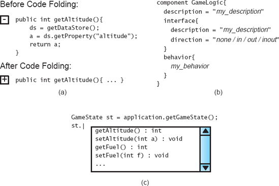
Figuras 7-13. Várias técnicas avançadas usadas em visualizações de texto: (a) dobra de código, (b) modelos e (c) autocompletamento.
Editores de texto aprimorados, como os encontrados em muitos ambientes integrados de desenvolvimento de software, suportam um conjunto de recursos base semelhante, mas também oferecem muitas melhorias. Essas melhorias estão disponíveis principalmente pelo editor de texto, que possui algum conhecimento interno da sintaxe ou semântica da notação subjacente. Melhorias comuns na representação incluem coloração de sintaxe e dobramento de código. Editores com suporte para coloração sintática identificam segmentos de texto como tokens e os colorem para representar o tipo de token (palavra-chave, cadeia de caracteres, número, variável, e assim por diante). Folding de código é uma técnica pela qual o editor pode identificar blocos de texto e "dobrá-los" em uma única linha para reduzir a quantidade de detalhes mostrados. Ambas as técnicas exigem que o editor tenha compreensão da sintaxe da notação subjacente. Melhorias comuns na interação incluem completude de código e templates. Interfaces com código completo permitem que o usuário digite parte ou todo um token, e o editor apresente opções para completar o token e salvar a digitação. Os templates permitem que o usuário insira um bloco de texto com marcadores de posição e então insira dados para cada marcador de posição. Algumas dessas técnicas de representação e interação são mostradas nas Figuras 7-13.
Rubrica de Avaliação para Visualizações Textuais
|
Escopo e Propósito |
Representando e editando modelos que podem ser expressos como texto (estruturado). |
|
Tipo Básico |
Textual. |
|
Representação |
Linhas de texto compostas por caracteres; dependendo da sintaxe, os caracteres serão agrupados em tokens ordenados. |
|
Interação |
Para editores de texto básicos, insera/exclua/copie/cole. Editores aprimorados podem fornecer recursos conscientes da sintaxe/semântica, como coloração de sintaxe, dobra de código, completude de código e templates. |
|
Fidelidade |
Em geral, visualizações textuais representam todo o modelo, incluindo todos os detalhes. |
|
Consistência |
Depende de quão bem a sintaxe da linguagem está definida; Uma linguagem com uma sintaxe mal projetada pode usar o mesmo token para propósitos diferentes em contextos distintos. Os mecanismos de interação geralmente são consistentes porque não variam. |
|
Inteligibilidade |
Em geral, visualizações textuais são melhores para visualizar informações que podem ser organizadas linear ou hierarquicamente. Eles têm baixa compreensibilidade para modelos complexos com muitos elementos inter-relacionados, ou elementos organizados em estruturas de grafo. |
|
Dinamismo |
Depende do editor em uso; Existem alguns ambientes integrados onde mudanças no modelo causam atualizações imediatas nas visualizações textuais. |
|
Coordenação de Visualizações |
Em alguns ambientes integrados, visualizações textuais podem ser coordenadas com outras visualizações de outras vistas por meio de um modelo compartilhado. |
|
Estética |
Depende da sintaxe da linguagem, assim como de como a visualização organiza e apresenta o texto. Blocos longos e contínuos de texto tendem a ser percebidos como esteticamente ruins; Texto bem organizado e colorido de forma atraente tende a ser percebido como esteticamente agradável. |
|
Extensibilidade |
Depende do editor; Alguns editores fornecem pontos de extensão bem definidos para adicionar nova sintaxe de linguagem e recursos de suporte, como coloração de sintaxe e autocompletamento para novas linguagens. |
Editores Gráficos Informais
PowerPoint e editores gráficos similares [(Microsoft Corporation 2007), (Microsoft Corporation 2007) (The Omni Group 2007)] são comumente usados para capturar decisões de design arquitetônico, apesar de essas ferramentas não terem suporte para semântica arquitetônica — são simplesmente editores de diagramas. Sem uma sintaxe gráfica real ou semântica, o poder e o apelo da modelagem gráfica informal não derivam do modelo ou da notação, mas de sua visualização. Do ponto de vista da representação, diagramas gráficos informais são geralmente diretos e esteticamente agradáveis. Texto, símbolos e gráficos bitmap coexistem nas representações conforme necessário. Nada está escondido; Tudo na representação é visível em uma única página ou slide. A página oferece uma limitação natural sobre a quantidade de detalhes que podem ser apresentados ao mesmo tempo; ao ter limites finitos, limita a complexidade da informação visualizada. Ao montar um slide deck ou usar ferramentas como as capacidades de animação do PowerPoint, é até possível retratar a evolução de uma arquitetura ao longo do tempo.
O aspecto mais atraente dos editores gráficos informais, no entanto, são suas interfaces de usuário. Esses editores são caracterizados por interfaces point-and-click que permitem aos usuários criar e manipular diagramas com grande facilidade e flexibilidade. Símbolos podem ser criados e movidos simplesmente arrastando e soltando. As linhas conectoras do PowerPoint até mantêm suas conexões enquanto as formas que conectam são movidas pela tela. Os usuários também podem facilmente adicionar mídia de fontes externas: gráficos bitmap, gráficos vetoriais, capturas de tela e até clipes de vídeo e áudio em quase qualquer formato podem ser adicionados a esses diagramas com apenas alguns cliques do mouse.
As figuras 7-14 mostram o PowerPoint sendo usado para desenhar uma arquitetura no estilo Koala. Embora a visualização seja atraente, certos problemas já são evidentes. Os vários elementos mostrados são apenas formas e textos independentes. Por exemplo, as interfaces dos componentes são simplesmente caixas brancas com triângulos pretos no topo; O PowerPoint não tem conceito de interface arquitetônica. Eles nem sequer são fixados aos retângulos que representam os componentes; elas simplesmente se sobrepõem às bordas. Como o diagrama não está vinculado a nenhuma representação semântica, mantê-lo consistente com outros modelos deve ser feito manualmente. As formas gráficas e decorações disponíveis não podem ser facilmente ampliadas. Não há recursos na interface do usuário para estabelecer padrões repetidos ou para estender a interface para levar em conta conceitos arquitetônicos.
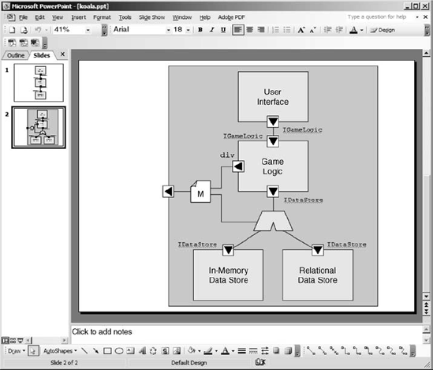
Figuras 7-14. Captura de tela do PowerPoint sendo usado para desenhar uma arquitetura no estilo de coala.
Rubrica de Avaliação para Visualizações Gráficas Informais
|
Escopo e Propósito |
Visualização de coleções arbitrárias de símbolos, elementos de texto, clip art e assim por diante. |
|
Tipo Básico |
Híbrido: principalmente gráfico com algumas anotações textuais e elementos. |
|
Representação |
Como uma tela contendo elementos gráficos e textuais flutuantes, posicionados arbitrariamente pelo usuário. Elementos que ocupam o mesmo espaço são desenhados uns sobre os outros, com a ordem de cima para baixo determinada pelo usuário. |
|
Interação |
Principalmente uma interface de usuário point-and-click, com opções para arrastar, soltar e manipular elementos com mouse e teclado. |
|
Fidelidade |
Em geral, o modelo subjacente é acoplado diretamente à visualização e nada é escondido, então a visualização é completamente fiel. |
|
Consistência |
O usuário é inteiramente responsável por desenvolver representações consistentes; A falta de consistência é um problema persistente nessas visualizações. |
|
Inteligibilidade |
O usuário é inteiramente responsável pela compreensibilidade das informações apresentadas. |
|
Dinamismo |
Há recursos limitados de animação para retratar mudanças ao longo do tempo. |
|
Coordenação de Visualizações |
Em geral, é extremamente difícil coordenar com outras visualizações, ou até mesmo conectar elementos em várias páginas/slides do mesmo arquivo entre si. |
|
Estética |
A estética é responsabilidade do usuário; A ampla paleta de símbolos e decorações disponíveis oferece aos usuários enorme liberdade para criar visualizações esteticamente agradáveis (ou ruins). |
|
Extensibilidade |
Em geral, adicionar novos símbolos é simples; no entanto, estender a interface do usuário para oferecer novas opções de interação é mais complicado. Capacidades de scripting ou interfaces publicadas que permitem extensões podem estar disponíveis. |
UML: A Linguagem Unificada de Modelagem
UML como notação foi discutida emCapítulo 6. O UML possui uma representação canônica associada que é principalmente gráfica. Já vimos vários exemplos de diagramas UML, como emFigura 7-4. Comparados à natureza livre dos editores gráficos informais que lidam com caixas e setas, diagramas UML são visualizações de elementos semanticamente mais significativos, como classes e nós de stategraph.
Os conceitos UML são mapeados para símbolos gráficos específicos. Por exemplo, a relação de "generalização" entre elementos é mapeada para uma seta com uma ponta branca e triangular fechada. Embora certos conceitos (e, como tal, seus símbolos associados) estejam presentes apenas em certos diagramas, diagramas que incorporam conceitos comuns usam o mesmo símbolo em cada diagrama. Por exemplo, a relação de "generalizar" está presente tanto nos diagramas de classes quanto nos diagramas de objetos, e o mesmo símbolo (a seta branca fechada) é usado para representar o conceito em ambos os diagramas. Curiosamente, embora a sintaxe do UML seja definida em um meta-modelo gráfico, o meta-modelo UML não mapeia conceitos UML para símbolos; esse mapeamento é descrito em outra documentação.
Mesmo levando em conta essa documentação adicional, o UML está associado apenas a uma representação canônica e não a uma interface canônica. Ou seja, os designers do UML prescrevem como os diagramas UML devem ser, mas não como o usuário deve interagir com eles em ferramentas ou ambientes de edição. Essas decisões ficam a cargo dos fornecedores individuais de ferramentas, e ferramentas como Rational Rose (Rational Software Corporation 2003) e ArgoUML (Argo/UML) possuem diferentes mecanismos para manipular e interagir de forma alguma com diagramas UML. A Figura 7-15 mostra uma captura de tela do ArgoUML editando um modelo UML. Note que a visualização gráfica canônica é apenas uma parte do ambiente. Outra visualização do modelo como uma árvore está presente no lado esquerdo. Ferramentas acessíveis pelo menu e pela área com abas abaixo permitem que o modelo seja manipulado de diferentes maneiras.
Ferramentas como Rose e ArgoUML fornecem interfaces de usuário atraentes, mas frequentemente podem borrar a distinção entre o que é fornecido pela ferramenta e o que é fornecido por uma notação de modelagem. Por exemplo, a captura de tela na Figura 7-15 inclui um editor para uma lista de tarefas. A própria UML não tem o conceito de lista de tarefas; essa é uma característica do ArgoUML. Os usuários devem estar atentos a essas distinções, pois elas podem dificultar a integração de múltiplas ferramentas operando no mesmo modelo ou a transição de um ambiente para outro.
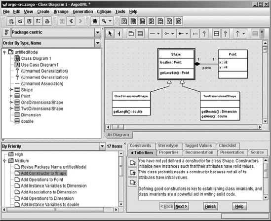
Figuras 7-15. Captura de tela do ArgoUML.
A visualização gráfica canônica não é a única disponível para usuários de UML. Embora não faça parte do padrão central UML, é possível visualizar dados UML usando texto por meio do uso de XMI (Object Management Group 2002). XMI é um formato baseado em XML criado para facilitar a troca de modelos entre ferramentas. É um formato de intercâmbio no qual um modelo UML pode ser codificado em XML. O XMI ajuda a destacar a distinção entre UML e sua visualização gráfica canônica. O XMI simples codifica apenas as informações em um modelo UML, mas não informações sobre o layout dos diagramas provenientes de visualizações gráficas. Uma extensão do XMI que inclui essas informações é fornecida em um padrão separado. A Figura 7-16 mostra um trecho de um documento XMI gerado pelo ArgoUML. Note a quantidade de texto usada para representar uma associação ponto a ponto simples, assim como a falta de informações sobre representação gráfica, layout ou posicionamento.
Uma das principais vantagens da visualização gráfica canônica do UML é o uso (em sua maioria) consistente de símbolos em diagramas e projetos. A razão por trás dessa decisão é que ela aumenta a capacidade dos stakeholders familiarizados com UML de entender rapidamente o significado dos diagramas em diferentes contextos. Nesse sentido, a popularidade do UML cria um efeito de rede: quanto mais pessoas usam o UML, mais valioso se torna o uso consistente desses símbolos.
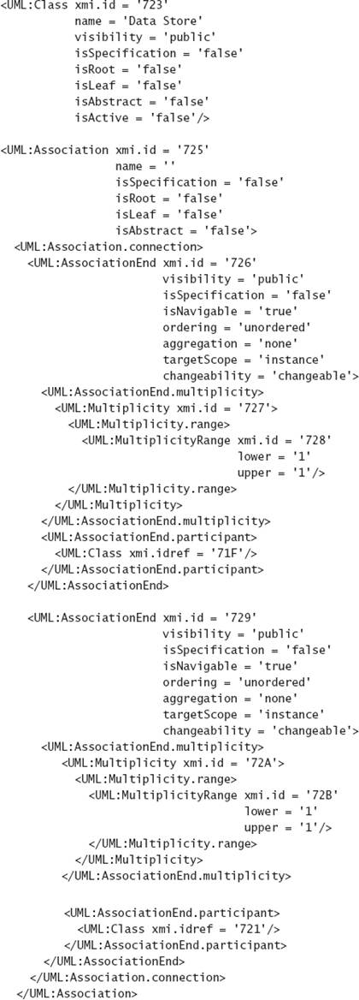
Figuras 7-16. Trecho de um documento XMI mostrando a representação de uma classe e associação UML.
No entanto, o uso consistente de símbolos pelo UML tem limitações e desvantagens. A consistência simbólica na visualização não pode criar precisão semântica no nível notacional. Ou seja, se o conceito de generalização for semanticamente ambíguo, o uso consistente da mesma forma de seta para representar o conceito não pode reparar essa ambiguidade. Além disso, o uso do mesmo conjunto de símbolos entre os limites de projetos e domínios limita o quanto UML pode ser especializado para um domínio específico. Ferramentas e padrões UML geralmente não suportam muita personalização em visualizações UML para projetos ou domínios individuais. Por exemplo, o Rational Rose permite que os usuários associem estereótipos a ícones gráficos, mas não altera fundamentalmente o símbolo do elemento ao qual o estereótipo está sendo aplicado.
Rubrica de Avaliação para Visualizações UML
|
Escopo e Propósito |
Visualização canônica de modelos UML por meio de (atualmente) treze tipos de diagrama. |
|
Tipo Básico |
Híbrido: principalmente gráfico com algumas anotações textuais e elementos (como restrições OCL) |
|
Representação |
Cada tipo de diagrama UML possui uma representação canônica. Cada tipo de diagrama é composto por um punhado de elementos básicos — o diagrama de classes, por exemplo, inclui elementos distintos para classes, métodos, diferentes tipos de associações, e assim por diante. |
|
Interação |
Depende da ferramenta em uso; diferentes ferramentas UML possuem interfaces de interação distintas. A maioria permite edição point-and-click no estilo do PowerPoint, e as opções de edição disponíveis geralmente são guiadas pela sintaxe e semântica do UML. |
|
Fidelidade |
Como uma visualização canônica, essas representações são geralmente completamente fiéis. |
|
Consistência |
O UML tenta usar símbolos consistentes, mesmo entre tipos de diagramas; Existem pequenas exceções. (Uma seta tracejada com cabeça aberta pode indicar uma dependência em um diagrama de classes ou uma mensagem em um diagrama de sequência.) |
|
Inteligibilidade |
A maioria dos diagramas pode ser interpretada em um nível muito geral, sem conhecimento prévio. No entanto, interpretar corretamente cada diagrama requer conhecimento específico do significado de cada símbolo do UML. A maioria dos diagramas tem raízes em notações anteriores (por exemplo, OMT e estadis) que podem ser familiares para os interessados fora do contexto do UML. |
|
Dinamismo |
Poucas ferramentas UML usam animação para representar mudanças no modelo subjacente. |
|
Coordenação de Visualizações |
Múltiplos diagramas UML podem ser usados para representar múltiplas visões de um sistema, mas não existe um padrão acordado para ligar informações comuns em múltiplas vistas. Alguns editores permitem que múltiplas instâncias do mesmo elemento estejam presentes em múltiplos diagramas simultaneamente e farão alterações nesse elemento simultaneamente em todos os diagramas. |
|
Estética |
Diagramas UML usam um conjunto limitado de formas relativamente básicas para reduzir a complexidade, embora isso possa fazer com que os diagramas pareçam excessivamente simplistas e uniformes. Alguns editores aprimoram isso permitindo que elementos UML sejam coloridos ou realçados com ícones decorativos para indicar propriedades dos elementos de forma mais clara, por exemplo. |
|
Extensibilidade |
Depende da ferramenta/editor em uso; a maioria suporta os mecanismos básicos de extensão do UML: estereótipos, valores marcados e restrições. No entanto, adicionar um novo tipo de diagrama ou estender a sintaxe do UML exigiria um grande trabalho. |
Rapide
Visualizações de efeito, que retratam os efeitos das decisões arquitetônicas em vez das decisões em si, podem ser vistas no projeto Rapide (Luckham e Vera 1995).Capítulo 6mostra vários modelos arquitetônicos na visualização textual canônica de Rapide. No entanto, o verdadeiro poder do Rapide vem das ferramentas que permitem aos usuários rodar simulações desses modelos arquitetônicos. O simulador Rapide recebe modelos de arquitetura na notação Rapide como entrada e então simula a interação dos vários componentes conforme definido pelos comportamentos especificados no modelo. As simulações geram uma série de eventos, alguns dos quais estão causalmente relacionados entre si. Como os componentes Rapide rodam em paralelo, os resultados das simulações não são estritamente determinísticos: simulações repetidas da mesma arquitetura podem gerar diferentes fluxos de eventos dependendo de como o escalonador do simulador aloca tempo para os vários componentes.
O resultado de uma simulação Rapide é um grafo direcionado de nós, com cada nó representando um evento e cada aresta representando uma relação causal entre eventos. Um exemplo, originalmente apresentado em -Capítulo 6, é mostrado novamente emFiguras 7-17. Isso pode ser visto como uma espécie de visualização do sistema e de sua arquitetura. Embora não necessariamente retrate decisões específicas de design, ela retrata o resultado direto das decisões de design arquitetônico e pode igualmente servir para fornecer aos interessados insights sobre o funcionamento da arquitetura.
Rubrica de Avaliação para o Rapide
|
Escopo e Propósito |
Especificação da estrutura arquitetônica e do comportamento dos componentes em formato textual; exibição dos resultados da simulação em formato gráfico. |
|
Tipo Básico |
Modelos arquitetônicos são especificados em uma visualização textual; As representações dos efeitos são gráficas. |
|
Representação |
Modelos em formato de texto rigoroso; Visualizações de efeitos são grafos direcionados contendo nós que representam eventos e arestas que representam dependências causais. |
|
Interação |
Os modelos são editados em um editor de texto comum; Visualizações de efeitos não são editáveis. |
|
Fidelidade |
A visualização textual do modelo é canônica; visualizações de efeitos mostram uma possível simulação. Múltiplas simulações podem produzir resultados diferentes em um sistema não determinístico. |
|
Consistência |
Vocabulário limitado dos símbolos garante consistência. |
|
Inteligibilidade |
Modelos arquitetônicos podem ser difíceis de escrever e compreender, embora isso se deva em grande parte à complexidade da notação subjacente. Visualizações de efeitos são simples de entender, embora sistemas complexos possam gerar grafos muito grandes e entrelaçados que são difíceis de interpretar. |
|
Dinamismo |
Sem suporte. |
|
Coordenação de Visualizações |
Visualizações de efeitos são geradas automaticamente a partir de modelos arquitetônicos. |
|
Estética |
Os modelos estão em um estilo familiar de linguagem de programação, embora o vocabulário dos operadores seja bastante amplo. Gráficos de visualização de efeitos são simples e sem adornos. |
|
Extensibilidade |
Difícil de estender; Rapide e seu conjunto de ferramentas são uma caixa preta relativa. |
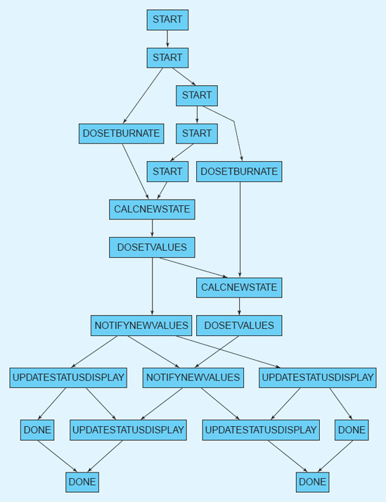
Figuras 7-17. Visualização rápida do efeito da aplicação do módulo lunar.
O Analisador de Estado de Transição Rotulado (LTSA)
O projeto Analyzer de Estado de Transição Rotulado (LTSA) do Imperial College em Londres, Reino Unido, é uma forma de analisar e simultaneamente visualizar sistemas concorrentes (Magee e Kramer 2006). Um sistema em LTSA é modelado como um conjunto de máquinas de estados finitos interagindo. Os usuários especificam comportamentos de componentes em uma álgebra de processos compacta chamada processos de estado finito (FSP); O FSP é então compilado em máquinas de estados com transições rotuladas. As ferramentas LTSA podem visualizar essas máquinas de estados graficamente usando uma visualização tradicional de nós e setas.
A Figura 7-18 mostra uma captura de tela da ferramenta LTSA. Múltiplas visualizações mantidas simultaneamente são exibidas. A área superior direita mostra a visualização textual canônica do modelo: FSP bruto. À sua esquerda há uma visualização baseada em árvores da organização do projeto. A seção central inferior mostra uma visualização gráfica do modelo FSP como um diagrama de transição de estado. No canto inferior direito mostra uma visualização do efeito textual que resulta da análise automatizada do modelo FSP; visualizações de efeitos animados também estão disponíveis.
Uma força única do LTSA é sua capacidade de empregar visualizações dinâmicas. Como o LTSA lida com concorrência, suas visualizações têm uma necessidade específica de apresentar o estado dos sistemas ao longo do tempo. A LTSA emprega duas estratégias para esse fim, ambas empregando animação. Primeiro, quando um estado de transição rotulado (LTS) é simulado e suas máquinas de estados estão sendo visualizadas, o estado atual e as transições de estado são animadas sobre a visualização de nós e setas mostrada na Figura 7-18. Segundo, e mais interessante, LTSes podem ser conectados a visualizações animadas que usam animação para mostrar diretamente o que está acontecendo no sistema a partir de uma perspectiva específica de domínio.
Um dos exemplos incluídos na documentação da LTSA é uma implementação do famoso problema dos filósofos da refeição mostrado na Figura 7-19, um problema clássico ao lidar com concorrência. Nesse problema, um grupo de filósofos senta-se ao redor de uma mesa circular. Entre cada par de filósofos há um fork. Filósofos precisam pegar ambos os garfos adjacentes para comer, mas também são limitados por um conjunto de regras sobre quando podem pegar e largar os garfos. O desafio do problema é criar um conjunto de regras de modo que todos os filósofos possam comer periodicamente e o sistema não entre em um estado travado (por exemplo, em que cada filósofo pega um garfo e nenhum coloca um).
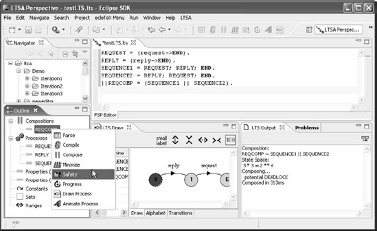
Figuras 7-18. Captura de tela da ferramenta LTSA.
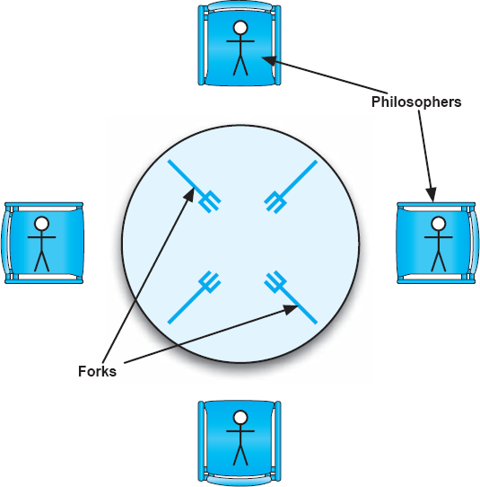
Figuras 7-19. Quatro filósofos da gastronomia.
As ferramentas LTSA modelam os filósofos como máquinas de estados comunicantes, mas também podem visualizar os modelos como um diagrama de uma tabela cercada por filósofos, semelhante ao que é mostrado na Figura 7-19. Mudanças de estado, como um filósofo adquirindo um garfo, são visualizadas como uma imagem real de um filósofo pegando o garfo. Simulações de outras aplicações, como controle de tráfego aéreo, utilizam visualizações específicas de domínio semelhantes conectadas diretamente aos simuladores de comportamento dos componentes (como imagens de aviões circulando e pousando). Diferente do Rapide, que só permite visualizar o tráfego de eventos em um gráfico posteriormente, o LTSA permite que os usuários visualizem o sistema sendo simulado em tempo real, usando animações e símbolos que são desenhados diretamente do domínio real. Embora os usuários do LTSA precisem dedicar tempo e esforço para construir essas visualizações específicas de domínio para cada aplicação, seu valor vem do fato de que elas contribuem muito para comunicar o verdadeiro significado das máquinas de estados abstratas. Pode ser difícil entender o significado de uma transição de estado particular em um diagrama de nós e setas, mas é muito mais fácil entender a imagem de um filósofo realmente pegando um fork.
Critério de avaliação para LTSA
|
Escopo e Propósito |
Visualização coordenada de modelos FSP e diferentes visualizações de efeitos. |
|
Tipo Básico |
Múltiplas visualizações de modelos textuais e gráficos e visualizações de efeitos. |
|
Representação |
Modelos FSP são visualizados tanto em texto quanto em diagramas gráficos de transição de estado. Visualizações de efeitos podem ser textuais, animadas nos diagramas de transição de estado, ou personalizadas e específicas de domínio. |
|
Interação |
Um conjunto integrado de ferramentas permite ao usuário manipular modelos FSP tanto em visualizações de texto quanto gráficas. |
|
Fidelidade |
A coordenação entre visualizações e modelos é mantida automaticamente; visualizações gráficas podem omitir algumas informações. |
|
Consistência |
Vocabulário limitado de símbolos e conceitos ajuda a garantir a consistência. |
|
Inteligibilidade |
FSP é uma notação textual complexa, mas é um pouco mais fácil de entender do que outros formalismos. Diagramas de transição de estado são diretos e seu formato é bem conhecido. Visualizações personalizadas específicas de domínio podem aumentar substancialmente a compreensão ao vincular os modelos graficamente aos conceitos de domínio. |
|
Dinamismo |
Animação em diagramas de transição de estado e visualizações personalizadas específicas de domínio. |
|
Coordenação de Visualizações |
As visualizações são coordenadas automaticamente. |
|
Estética |
Diagramas de transição de estado bem conhecidos são fáceis de interpretar; Visualizações específicas de domínio vinculam modelos abstratos a conceitos concretos do mundo real. |
|
Extensibilidade |
Novas visualizações personalizadas específicas de domínio podem ser adicionadas como plug-ins. |
xADL 2.0
A sintaxe da linguagem xADL 2.0 é definida em um conjunto de esquemas XML. Assim, a visualização canônica para arquivos xADL 2.0 é textual, em XML que segue a sintaxe prescrita pelos esquemas. Um dos aspectos mais interessantes do xADL 2.0, no entanto, é que sua visualização canônica raramente (se é que alguma vez) é usada ou sequer vista por seus usuários. Ferramentas que suportam modelagem xADL 2.0 oferecem uma variedade de visualizações alternativas, tanto gráficas quanto textuais (Dashofy 2007). Algumas dessas visualizações incluem as seguintes.
xADLite
A visualização xADLite tem sido usada ao longo deste livro para descrever várias arquiteturas. xADLite é uma visualização textual que captura modelos xADL 2.0 usando tokens textuais organizados de forma semelhante às linguagens de programação do tipo C: blocos hierárquicos são cercados por colchetes curvados, o operador "=" é usado para denotar a atribuição, aspas duplas cercam valores de string, e assim por diante. Essa visualização foi criada especificamente para capturar todos os dados em um modelo xADL 2.0 em um formato compacto, usando poucos caracteres suspesos. A simbologia semelhante à da linguagem de programação foi escolhida devido à popularidade dessa organização: desenvolvedores de software experientes se sentem confortáveis com esses símbolos e organização e conseguem lê-los facilmente sem treinamento adicional. Do ponto de vista da interface do usuário, arquivos xADLite são escritos e manipulados usando editores de texto padrão.
ArchEdit
ArchEdit, mostrado nas Figuras 7-20, é uma ferramenta que fornece uma visualização semigráfica dos modelos xADL 2.0. A estrutura do documento é representada em formato de árvore com nós selecionáveis. Quando um nó é selecionado, atributos de texto desse nó são exibidos para edição. Embora as informações nessa visão sejam organizadas hierarquicamente (muito parecidas com as visualizações XML ou xADLite), a interface do usuário do ArchEdit é muito mais interativa. O ArchEdit possui uma interface point-and-click que não só permite aos usuários expandir e recolher subárvores do documento, mas também oferece menus sensíveis ao contexto que fornecem opções específicas para adicionar, remover ou manipular elementos. O ArchEdit oferece uma visualização direcionada à sintaxe: a interface do usuário e o que é exibido na tela são derivados, ao menos parcialmente, da própria sintaxe do xADL 2.0. Por exemplo, quando você clica com o botão direito em um elemento no ArchEdit, ele abre um menu com filhos que podem ser adicionados a esse elemento. A lista de filhos disponíveis é gerada com base na definição da linguagem xADL 2.0 e não é codificada diretamente na ferramenta. Para uma linguagem com sintaxe maleável como xADL 2.0, visualizações direcionadas à sintaxe e outras ferramentas tornam-se ainda mais valiosas. A principal desvantagem das visualizações (mesmo das melhores) orientadas à sintaxe é que a sintaxe da notação subjacente determina como a informação é apresentada visualmente. Se a notação for em forma de árvore e hierárquica, é provável que uma visualização dirigida à sintaxe da notação também empregue árvores e hierarquia.
Arquipélago
O Archipelago, mostrado na Figura 7-21, é uma ferramenta que fornece visualizações gráficas de modelos xADL 2.0. As visualizações do Archipelago são semanticamente conscientes, o que significa que representações e comportamentos específicos estão incorporados ao Arquipélago para representar e interagir com diferentes conceitos xADL. Por exemplo, componentes e conectores são representados como retângulos, interfaces são representadas como extremidades quadradas fixadas às bordas dos retângulos de componentes e conectores, e links são representados como splines. Diferente do ArchEdit, que pode adaptar sua interface de usuário automaticamente para novos elementos sintáticos, o Archipelago precisa ser estendido com novo código para suportar novos conceitos xADL 2.0. No entanto, o Archipelago pode oferecer visualizações muito mais intuitivas para seus usuários; É muito mais fácil entender uma topologia arquitetônica olhando para um gráfico de caixa e linha do que para uma lista plana de componentes, conectores e links.
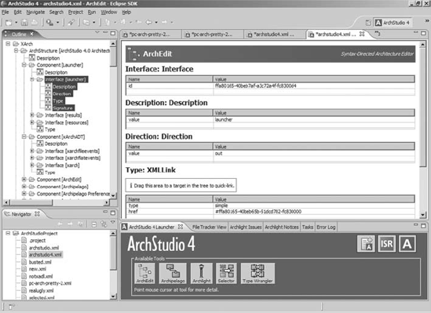
Figura 7-20. Captura de tela do ArchEdit.
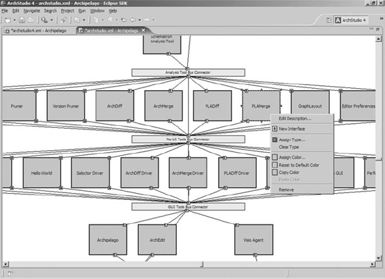
Figuras 7-21. Captura de tela do arquipélago.
A arquitetura interna do Archipelago depende fortemente de plug-ins para implementar elementos visuais e suas representações gráficas, bem como comportamentos — como o Archipelago reage a entradas do usuário e eventos externos. Na verdade, o próprio Arquipélago é realmente um pequeno núcleo de pontos de extensão; Quase todo o seu comportamento é implementado por plug-ins. Isso torna o Archipelago um ambiente altamente flexível para adicionar novos elementos visuais e comportamentos, uma necessidade real quando a notação subjacente visualizada (xADL 2.0) é modular e extensível.
A principal desvantagem de editores totalmente conscientes da semântica, como o Archipelago, é o custo de criá-los e mantê-los. Os usuários esperam comportamentos intuitivos, abrangentes e personalizados, adaptados a notações individuais, e para notações mais extensas isso pode ser bastante caro de construir. O Archipelago tenta limitar esse custo usando uma arquitetura modular, mas isso não consegue reduzir a complexidade desses editores nem perto do nível de editores mais simples dirigidos à sintaxe.
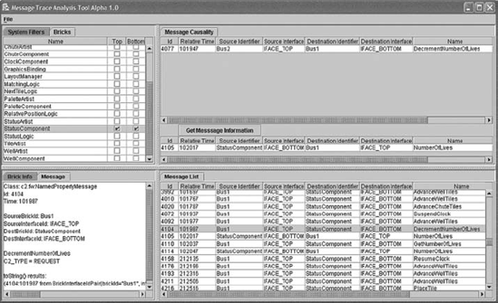
Figura 7-22. Captura de tela do MTAT.
MTAT
A Ferramenta de Rastreamento e Análise de Mensagens (MTAT) (Hendrickson, Dashofy e Taylor 2005), mostrada na Figura 7-22, oferece suporte adicional de visualização para arquiteturas xADL 2.0 que são mapeadas para implementações compostas por componentes que interagem usando eventos assíncronos. Assim como o Rapide e o LTSA, as visualizações do MTAT capturam um aspecto dinâmico da arquitetura de um sistema, ou seja, o envio e o recebimento de eventos. No entanto, ao contrário do Rapide e do LTSA, que trabalham apenas em arquiteturas simuladas, o MTAT oferece uma visualização unificada de duas atividades do ciclo de vida: design e implementação da arquitetura. Eventos visualizados no MTAT são eventos reais enviados entre componentes em um sistema real. A animação pode sobrepor esses eventos sobre diagramas estruturais da arquitetura visualizada no Arquipélago, e o usuário pode acompanhar uma sequência de eventos de componente em componente, observando como o aplicativo em execução funciona ao mesmo tempo.
Rubrica de Avaliação para Visualizações xADL 2.0
|
Escopo e Propósito |
Múltiplas visualizações coordenadas textuais, gráficas e de efeitos de modelos xADL 2.0. |
|
Tipo Básico |
Coordenação textual, gráfica e de efeito. |
|
Representação |
Visualizações textuais como XML ou xADLite; visualizações gráficas como árvores e texto (no ArchEdit) ou grafos de símbolos (no Arquipélago); visualizações de efeitos híbridos no MTAT. |
|
Interação |
Múltiplos editores coordenados, cada um com seu próprio paradigma de interação que se assemelha a editores comparáveis para outras notações. |
|
Fidelidade |
Visualizações textuais e ArchEdit exibem o modelo inteiro sem deixar de fora detalhes; Diversas visualizações gráficas omitem alguns detalhes. |
|
Consistência |
Cada visualização tem seu próprio método de representar conceitos, embora características como ícones comuns os unifiquem. Mecanismos de interação também são otimizados para a visualização específica, embora tendam a ser consistentes com ferramentas semelhantes para outras notações. |
|
Inteligibilidade |
Diferentes visualizações têm diferentes níveis de compreensão. Visualizações gráficas tendem a ser mais fáceis de entender do que notações textuais, mas deixam algumas informações de fora. Diferentes visualizações são otimizadas para exibir diferentes tipos de informação. |
|
Dinamismo |
Visualizações como o MTAT usam animação para representar o comportamento de sistemas em execução; Outras visualizações são coordenadas ao vivo para que mudanças em uma visualização apareçam imediatamente nas outras. |
|
Coordenação de Visualizações |
Diferentes visualizações são coordenadas por meio de um repositório comum de modelos que mantém uma representação em memória do modelo xADL subjacente. |
|
Estética |
Diferentes visualizações tentam aumentar o apelo estético ao serem especializadas para representar um tipo específico de informação. |
|
Extensibilidade |
Novas visualizações podem ser adicionadas conectando-as ao repositório comum do modelo; visualizações como Archipelago também são extensíveis por meio de seus próprios mecanismos internos de plug-in. |
ASSUNTO FINAL
Aqui focamos no papel da visualização no desenvolvimento baseado em arquitetura de software. Visualizações compreendem representação (como um conjunto de decisões de design é apresentado visualmente) e interação (como as partes interessadas interagem, exploram e manipulam essas representações).
Talvez a lição mais importante deste capítulo seja que visualizações não são as mesmas coisas que suas notações de modelagem subjacentes. Toda notação de modelagem possui pelo menos uma visualização canônica, que pode ser textual, gráfica ou uma combinação de ambas. É difícil e às vezes contraintuitivo tentar separar mentalmente o conteúdo informacional de um modelo de sua visualização canônica, mas fazer essa distinção é útil. Uma vez feita essa distinção, é possível pensar em visualizações alternativas ou coordenadas para o mesmo modelo. Também é possível separar os pontos fortes e fracos de uma notação de modelagem dos pontos fortes e fracos de como essa notação é visualizada. Essa distinção também ajuda a explicar fenômenos como o uso de ferramentas semelhantes ao PowerPoint para modelagem de arquitetura. Aqui, a visualização é extremamente madura e versátil, mas o modelo subjacente é desprovido de semântica. Isso torna essas ferramentas atraentes, mas perigosas de usar a longo prazo.
Ao selecionar visualizações para um projeto, não negligencie as visualizações de efeito. Lembre-se de que visualizações de efeito não visualizam diretamente decisões de design arquitetônico, mas os resultados da aplicação de algum processo a essas decisões de design — análise, simulação e assim por diante. Frequentemente, tanto foco é dado à visualização de modelos que essas visualizações de efeitos são negligenciadas. Lembre-se de que os resultados de análise e simulação são críticos e devem ser interpretados corretamente; Isso pode ser muito mais fácil com o uso de visualizações de efeitos apropriadas.
Usadas de forma adequada, as visualizações podem tornar muito mais fácil trabalhar, entender, trocar e comunicar decisões de design arquitetônico. Para maximizar esse efeito, selecione visualizações com altos graus de fidelidade, consistência (tanto interna quanto externa), compreensibilidade, dinamismo e assim por diante. Essas decisões devem ser consideradas no contexto dos interessados-alvo e de suas próprias necessidades, habilidades e experiências prévias.
Neste capítulo eCapítulo 6, discutimos como decisões de design arquitetônico podem ser capturadas em modelos e como esses modelos podem ser visualizados. Reiteramos que modelos semanticamente ricos são mais valiosos do que os semanticamente pobres. O próximo capítulo explica o porquê. Lá, discutimos como a análise arquitetônica utiliza informações semânticas em modelos para ajudar as partes interessadas a descobrir propriedades importantes do sistema cedo, antes que elas se propaguem para fases posteriores de projeto, onde são caras de alterar.
O Caso de Negócios
Visualizações podem ser vistas como as interfaces de usuário para modelos arquitetônicos. De muitas maneiras, elas cumprem o mesmo papel de interface de usuário em um sistema de software. Eles definem a aparência e a sensação do modelo subjacente para as partes interessadas. Eles podem facilitar o trabalho com os conceitos e semânticas subjacentes, mas não os modificam. Por causa disso, mesmo as melhores visualizações não conseguem corrigir problemas semânticos em suas notações de destino, mas podem agregar valor substancial a notações já adequadas e ter um efeito tremendo na usabilidade prática dessas notações.
Por essas razões, é importante considerar visualizações — não apenas anotações — desde o início em um esforço de desenvolvimento de software. Um fator chave a ter em mente ao selecionar visualizações é o conjunto de partes interessadas que as utilizarão. Visualizações podem pegar modelos complexos e apresentá-los (ou um subconjunto deles) de uma forma que faça sentido intuitivo para as partes interessadas. Os tipos de visualizações mais úteis para um gerente de projetos, por exemplo, não são os mesmos que são úteis para um engenheiro de software. Embora visualizações canônicas estejam sempre disponíveis, lembre-se de que muitas alternativas também estão disponíveis.
A decisão de desenvolver uma nova visualização deve ser tomada com muito cuidado. Como mencionado no capítulo, novas visualizações podem ser muito caras para desenvolver e manter. Se possível, aproveite os mecanismos de extensibilidade disponíveis nas visualizações existentes em vez de desenvolver um do zero. Desenvolver uma nova visualização pode ser uma estratégia viável em certas circunstâncias. Algumas notações, especialmente as esotéricas ou baseadas em pesquisa, podem ter semântica valiosa ou capacidades de análise, mas carecem de bom suporte à visualização. Ao desenvolver uma família de sistemas em um determinado domínio (vejaCapítulo 15), criar novas visualizações específicas de domínio também pode ser valioso, e o custo é amortizado em todos os projetos que utilizam a visualização.
PERGUNTAS DE REVISÃO
EXERCÍCIOS
LEITURA ADICIONAL
A maioria das visualizações que você encontrará são visualizações canônicas, e por isso são documentadas nos mesmos lugares que suas ferramentas associadas ou notações subjacentes. Esse é o caso das ferramentas semelhantes ao PowerPoint [(Microsoft Corporation 2007), (Microsoft Corporation 2007), (The Omni Group 2007)] e UML (Booch, Rumbaugh e Jacobson 2005), além de várias outras. Também é interessante investigar visualizações relacionadas que não são canônicas, como o XMI (Object Management Group 2002). Sistemas como Rapide (Luckham e Vera 1995) e LTSA (Magee e Kramer 2006) são interessantes pelo uso de visualizações de efeitos.
O trabalho de Edward Tufte (Tufte 2001; Tufte 1990), citado em uma barra lateral deste capítulo, é uma leitura excelente para quem deseja apresentar informações complexas de forma clara e coerente. Embora ele se concentre principalmente na apresentação de dados científicos e quantitativos, muitas de suas ideias são facilmente traduzidas para outros domínios e aplicações.